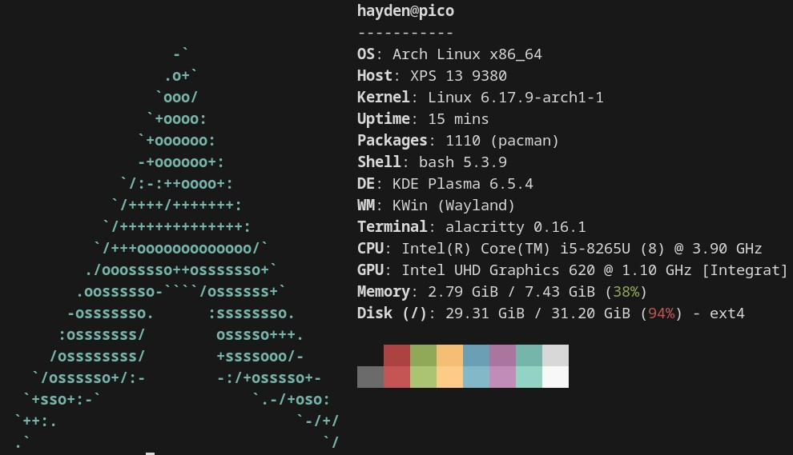

movie reviews
section 1: movies in fall and maybe summer 2025
In every film conversation I'm the one asking questions. The price of sexual activity is lethargy especially in the evenings and mornings but I don't have this problem because I spend most of my time cruising around fishtown crossfit gyms eating special K, giving me a certain type who wakes up at 6am to run from me great distances. It only makes sense because I've got the build of maybe the 80th–90th percentile of men my age to the extent one time when I was ether taking my pants off or putting my pants on I accidentally grabbed the entirety of my quad causing me to need a moment to breath and reflect. That is to say: movies keep me from my lonesome. That is to say: let the picture do the talking you can't.
In every culture conversation, I'm the one secretly writing down what you're saying on the notes app in my phone. In every ontological conversation, I'm one of the ones talking. She needs film or see is destined to particle like non-will— a kind of even worse stupidity. I can only bring myself to to it when I have to, or when the suns down. I deserve true lethargy.
in the future I will watch more movies by and about women, this first list is too badass (negative) with the exception of maybe Hackers (1995). If you have movie recommendations know I hate 'B movies' or so-bad-its-good. I grew up drinking well water.
Pulp Fiction (1994)
- watched winter break 2025
- had learned recently before watching that Tarantino is actually an annoying guy
- This movie might be the reason I harbor a distrust of the BDSM community but that's on me
- My mom sat down to half watch the second half
- if my writing comes off about reddit memes and stupid parody know I really like this movie
This is one of those movies that got eaten alive by cultural osmosis. Like one time in debate I said this one metaphor everyone has a different interpretation of: "its like when you poop straight corn kernels that have made it all the way though your digestive system intact. Compare this to when you eat that same corn and it turns to brown pulp". This is how rabbits eat because they need to run it around a few times because their digestive tracts aren't big enough for breaking down grass. So they need to eat their own poop a few times.
All of that is to say: watching this movie I feel like the spring rabbit eating their own poop maybe only the second time rather than maybe the perhaps intentional first time. Its tough to watch both old things and new things for that reason but I'll stay happily obligated to do both. "Its not postmodern enough". If I'm here for cultural conversation or post-cultural non-conversion I should watch everything that was a shitty community episode.
The Hateful Eight (2015)
- watched some time at home (not at collage) alone and experiencing deep and repetitive cabin fever.
- some of the hardest silhouettes of men brandishing guns I've ever seen
This is the best film depiction of suburban hell
White Noise (2022)
- watched as maybe an after function I don't remember
- I searched netflix for 'cerebral'
- all my roommates showed up for the ending. their commentary was uninspired
Its like the netflixified genre fiction version of my kind of movie. Its the spy a nation with a cocaine-problem-type intelligence agency would send to seduce me after getting my browser history (i.e. porn sorted by # of citations, etc.)
Taxi Driver (1976)
- The girl I watched this with got noticeably more tasteful about art after transitioning
- I watched this after Pretend It's A City without knowing they were both Scorsese. When I figured that connection out I spent a few minutes stimming sophisticated gestures.
'Cultural vocabulary': I abbreviated a whole conversation about why I hated someone with "he's the guy from taxi driver". New York still looks a little fun and awesome in this.
Hackers (1995)
- watched with a friend over to cook (we burnt everything)
- Heard about it from maia's appearance on Well There's Your Problem Podcast
- The jury rigged playstation 4 pirating setup we were watching this on was barley working.
- nor were we
- of the runtime I caught maybe five minutes total
You all talk about the computer but you don't reveal in it.
